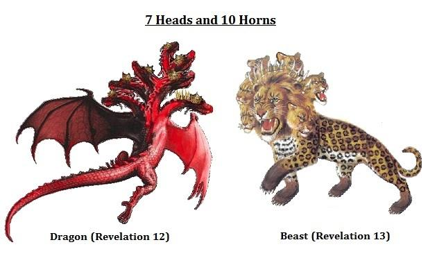

Introduction: The book of Job began with Satan falsely slandering Job. The book concludes with God’s revelation to Job about the hideous nature of his accuser and tormentor. From the beginning of Genesis through the end of Revelation, God describes Satan as a serpent or a dragon. Here, He reveals our Accuser by one of his many names; Leviathan. Through God’s description of the monster Leviathan, He reveals several warnings about Satan’s evil character.
First, God asked Job if he could control the “tongue” of Leviathan. In Hebrew, that same term means “slander.” It was Satan’s slander against Job that started his trials. Satan’s slander and attacks against you also cannot be stopped without God. Second, God asked Job if he could form a covenant with Leviathan. Satan cannot be bargained with because he is the father of lies. Third, God promised that there were none who could oppose Him, the Creator of the universe. Thus, Satan’s power is no match against God. Fourth, God said that Leviathan’s scales were his pride. God further said that air could not reach Leviathan through his scales. In Hebrew, the term “air” can also be translated as “Spirit,” including the Spirit of God. Satan’s pride caused him to be cast out of heaven. His pride also prevents him from being in the presence of God’s Spirit. Fifth, God said that Leviathan had a fiery tongue. In the book of James, God says that our tongues can also start fires. Satan’s tongue is his most dangerous weapon. He can burn the unwary with his lies and deception. Sixth, God warned that Leviathan could cause the mighty to become afraid. Satan can still cause those who fail to depend upon God to feel fear. Finally, God said that Leviathan was the “king over all the sons of pride,” and he illuminates a pathway for them. Today, Satan leads the prideful and rebellious on a path to darkness away from God.
God asked Job if he could subdue Leviathan. In response to Job’s challenge regarding God’s divine justice, God asked if Job could control the source of his sorrow, Leviathan: “1 Can you drag out Leviathan with a fishhook, and press down his tongue with a rope? 2 Can you put a rope in his nose, and pierce his jaw with a hook?” (Job 41:1-2). In Hebrew, the name “Leviathan” means “the twisting one.” He twists the truth like a twisting serpent. While some modern commentaries assume that this was just a big crocodile, the descriptions of “Leviathan” here and elsewhere in the Bible demonstrate that he was not a crocodile. This is instead a reference to the devil by his ancient name.
The Bible reveals Leviathan to be our Accuser, the Dragon, or Satan. Job knew exactly who God was referring to when God spoke of Leviathan. And he did not believe him to be some mythical being. In a moment of weakness, he called upon people who imposed curses to curse the day of his birth the same way that people would curse Leviathan: “Behold, may that night be barren; may no joyful shout enter it. May those curse it who curse the day, who are prepared to disturb Leviathan.” (Job 3:7-8). Job had also praised God for piercing the “fleeing serpent” “Rahab”, which means in Hebrew the “proud one”: “With His power He quieted the sea, and by His understanding He shattered Rahab. By His breath the heavens are cleared; His hand has pierced the fleeing serpent.” (Job 26:12-13). The psalmist also knew Leviathan. “There is the sea, great and broad, in which are swarms without number, animals both small and great. The ships move along there, and Leviathan, which You have formed to have fun in it.” (Ps. 104:25-26). The psalmist spoke of how God would crush the “heads” of Leviathan. “You divided the sea by Your strength; You broke the heads of the sea monsters in the waters. You crushed the heads of Leviathan; You gave him as food for the creatures of the wilderness.” (Ps. 74:13-14). In the King James Bible, the Aramaic Bible, the Brenton Septuagint translation, and the Berean Bible, the word “sea monsters” in Psalm 73:13 is translated as “dragons.” Isaiah also revealed God’s defeat of the “dragon”, the “twisting serpent” Leviathan during the end times: “On that day the LORD will punish Leviathan the fleeing serpent, with His fierce and great and mighty sword, even Leviathan the twisted serpent; and He will kill the dragon who lives in the sea.” (Is. 27:1). Like Job, Isaiah would also refer to Satan as “Rahab”, the dragon: “Awake, awake, put on strength, o arm of the LORD; awake as in the days of old, the generations of long ago. Was it not You who cut Rahab in pieces, who pierced the dragon?” (Is. 51:9). Satan is also first referred to in the Bible as the “cunning” “serpent” (Gen. 3:1). At the end of the Bible, he is referred to as the seven-headed “dragon,” whom Jesus has defeated: “And there was seen another sign in heaven: and behold, a great red dragon, having seven heads and ten horns, and upon his heads seven diadems. . . And the great dragon was thrown down, the serpent of old who is called the devil and Satan, who deceives the whole world; he was thrown down to the earth, and his angels were thrown down with him.” (Rev. 12:3, 9).

Why Leviathan was most likely not a crocodile. Despite Isaiah’s description of Leviathan as a dragon (Is. 27:1) and the psalmist’s description of this beast as having many “heads” (Ps. 13-14), many commentators still assume that this was just an ordinary crocodile or some borrowed pagan myth: “Most interpreters see the crocodile here, although after the discovery of Ugaritic literature with its mythical dragon called Lotan, many have assumed that a dragon like creature is what the poet had in mind. Though some of the statements are hyperbolic (vv. 18-20[10-12]), there are enough that accurately describe the features and behavior of a crocodile to make it probable that the poet had seen this creature (note the scaly skin in vv. 7, 15-17[40:31; 41:7-9]; the many sharp teeth in v. 14[6] and the fast swimming in v. 32[24]).” (Robert Alden, The New American Commentary, Vol. 11, Job (B&H Publishing Group 1993) p. 400). Yet, it was God and not a poet who described Leviathan. And God stated that he emits fire: “His breath sets coals aglow, and a flame goes forth from his mouth.” (Job 41:21). Crocodiles cannot breath out fire. They are also amoral reptiles. Thus, one cannot be the “king over all the sons of pride.” (Job 41:34). As the author of these statements, God further cannot lie or exaggerate: “God is not a man, that He would lie,” (Nu. 23:19a; Heb. 6:18). Also, mankind has subjugated crocodiles. They are hunted, farmed, and kept in zoos. It is likely that Satan took a physical form, just as he did in the Garden of Eden. Whatever that form was, it was both frightening and known in many ancient cultures.
Only God can save you from the slander of the Accuser. God asked Job: “1 Can you drag out Leviathan with a fishhook, and press down his tongue with a rope?” (Job 41:1). Here, the Hebrew word for “tongue” or “lashon”( לָשׁוֹן) can also be translated as “slander.”1 In other words, God was asking Job if he could stop Satan from slandering him. Satan’s slander is what led to Job’s trial. Satan slandered Job by alleging that he only praised God because God had allegedly bought him off with blessings (Job 1:9-11; 2:4-5). Just as he did with Job, Satan is the Accuser of the brethren. He slanders us day and night before God: “Then I heard a loud voice in heaven, saying, ‘Now the salvation, and the power, and the kingdom of our God and the authority of His Christ have come, for the accuser of our brothers and sisters has been thrown down, the one who accuses them before our God day and night.”’ (Rev. 12:10). On our own, we have no hope of stopping his slander. But thankfully we have an Advocate in Jesus. “My little children, I am writing these things to you so that you may not sin. And if anyone sins, we have an Advocate with the Father, Jesus Christ the righteous;” (1 Jo. 2:1). As our Advocate, He intercedes for us before the Father: “who is the one who condemns? Christ Jesus is He who died, but rather, was raised, who is at the right hand of God, who also intercedes for us.” (Ro. 8:34). Like Job, God wants you to turn to Him for deliverance from Satan.
Only God can save you from Satan. God also asked if Job could subdue his attacker: “2 Can you put a rope in his nose, and pierce his jaw with a hook?” (Job 41:2). God used the same expression to warn that He would allow the rebellious Jews to be placed into bondage and captivity: “Because of your raging against Me, and because your complacency has come up to My ears, I will put My hook in your nose, and My bridle in your lips, and I will turn you back by the way by which you came.” (2 Kgs. 19:28; Is. 37:29). Mankind has frequently placed crocodiles into bondage in zoos. But mankind cannot place Satan into bondage. Only God can and will do that. “By celebrating His dominion over Behemoth and Leviathan, the Lord is illustrating what He said in 40:8-14. He is celebrating His moral triumph over the forces of evil. Satan the Accuser has been proved wrong though Job does not know it. The author and the reader see the entire picture that Job and his friends never knew. No rational theory of suffering is substituted for the faulty one the friends proffered. The answer given is the same as in Genesis. God permitted the Accuser to touch Job as part of His plan to humiliate Satan. But now that the contest is over, God still did not reveal His reason to Job. Job did not find out what the readers know. That is why Job could be restored without destroying the integrity of the account. To understand this is to understand why the forces of moral disorder are veiled underneath mythopoeic language about ferocious, uncontrollable creatures. Once again we emphasize that if the specific and ultimate reason for his suffering had been revealed to Job – even at this point – the value of the account as a comfort to others who must suffer in ignorance would have been diminished if not canceled.” (Frank Gaebelein, Elmer Smick, The Expositor’s Bible Commentary, Vol. 4, 1, 2 Kings, 1, 2 Chronicles, Ezra, Nehemiah, Esther, Job (Zondervan Publishing House 1988) p. 1051).
God asked Job if could strike a deal with Leviathan. Leviathan has no love for mankind. Thus, to try to destroy us, he will break any covenant or deal that we may strike with him: “3 Will he make many pleas to you, or will he speak to you gentle words? 4 Will he make a covenant with you? Will you take him as a servant forever? 5 Will you play with him as with a bird, and tie him down for your young girls? 6 Will the traders bargain for him? Will they divide him among the merchants?” (Job 41:3-6). Many people unknowingly enter covenants or agreements with Satan when they embrace sin. He promises thrills when you engage in conduct that God calls evil. But Satan never keeps his promises. After the initial thrill of sin passes, he leaves his victims with only misery and sorrow.
Mankind cannot make a lasting covenant with Satan. God asked Job “4 Will he make a covenant with you? Will you take him as a servant forever?” (Job 41:4). Satan will not keep any covenant or deal with you. He lied to Eve to induce her to sin (E.g., Gen. 3:4). He also tries to deceive mankind as well: “But I am afraid that, as the serpent deceived Eve by his trickery, your minds will be led astray from sincere and pure devotion to Christ.” (2 Cor. 11:3). He also becomes your father when you lie: “You are of your father the devil, and you want to do the desires of your father. He was a murderer from the beginning, and does not stand in the truth because there is no truth in him. Whenever he tells a lie, he speaks from his own nature, because he is a liar and the father of lies.” (Jo. 8:44). He wants to place mankind into bondage to serve and worship him.
Jesus offers you an eternal covenant that can never be broken. Through His shed blood, Jesus has made an eternal covenant with mankind that He will never break: “Now may the God of peace, who brought up from the dead the great Shepherd of the sheep through the blood of the eternal covenant, that is, Jesus our Lord.” (Heb. 13:20). “And in the same way He took the cup after they had eaten, saying, “This cup, which is poured out for you, is the new covenant in My blood.” (Lk 22:20). He further came to serve mankind as a humble servant: “just as the Son of Man did not come to be served, but to serve, and to give His life as a ransom for many.” (Matt. 20:28; Mk. 10:45). “For you know the grace of our Lord Jesus Christ, that though He was rich, yet for your sake He became poor, so that you through His poverty might become rich.” (2 Cor. 8:9). While Satan can offers you lies, Jesus offers you the truth: “Jesus said to him, ‘I am the way, and the truth, and the life; no one comes to the Father except through Me.”’ (Jo. 14:6).
You also cannot bargain or trade with Satan. God also asked Job “6 Will the traders bargain for him? Will they divide him among the merchants?” (Job 41:6). Many have tried to bargain with Satan. He promises wealth, power, and the things of the flesh. He tried to bargain with Jesus by offering all the kingdoms of Earth if only Jesus would bow before him (Matt. 4:8-9). Jesus rebuked Satan (Matt. 4:10). Others have sadly accepted his offer. But they have found that the pleasures that he offers lasts only for a “season” (Heb. 11:25). Jesus warned that you cannot bargain with Satan because he wants to steal the one thing that you need for eternal life: “For what good will it do a person if he gains the whole world, but forfeits his soul? Or what will a person give in exchange for his soul?” (Matt. 16:26; Mk. 8:36; Lk. 9:25). You must be willing to give up what Satan offers to accept what Jesus offers: “For whoever wants to save his life will lose it; but whoever loses his life for My sake will find it.” (Matt. 16:25; 10:39; Jo. 12:25).
God asked Job if he could oppose Him when He is sovereign over even Leviathan. Although mankind is no match against Leviathan, Leviathan is no match against God: “7 Can you fill his skin with harpoons, or his head with fishing spears? 8 Lay your hand on him. Remember the battle; you will not do it again! 9 Behold, your expectation is false; will you be hurled down even at the sight of him? 10 No one is so reckless that he dares to stir him; who then is he who opposes Me? 11 Who has been first to give to Me, that I should repay him? Whatever is under the entire heaven is Mine.” (Job 41:7-11). Although this was directed at Satan, it was also a subtle rebuke against Job. Job had previously demanded to plead his innocence before God in His Court: “The allusion is to Job’s persistent demand for a hearing - a controversy (Job 9:34, 35; Job 10:3; Job 13:3, 22; Job 23:3-7, etc.) - a trial, in which he shall plead with God, and God with him, upon even terms as it were, and so the truth concerning him, his sins, his integrity, his sufferings, and their cause or causes, shall be made manifest. God resists any and every claim that is made on Him to justify Himself and His doings to a creature. He is not a debtor to any. If He explains himself to any extent, if He condescends to give an account of any of his doings, it is of pure grace and favour.”) (Pulpit Commentary on Job 41:10).2
God is sovereign over Satan and the entire universe. Mankind cannot subdue Satan (Job 41:7-9). Yet, Satan has no power against the Creator of the universe. God asked Job “Who then is he who opposes Me?” (Job 41:10b). God later answered that no one can challenge Him: “For who is like Me, and who will summon Me into court? And who then is the shepherd who can stand against Me?” (Jer. 49:19b; 50:44b) “Remember the former things long past, for I am God, and there is no other; I am God, and there is no one like Me,” (Is. 46:9). God also asked Job “Who has been first to give to Me, that I should repay him? Whatever is under the entire heaven is Mine.” (Job 41:11). Paul later quoted this same passage in the book of Romans: “Or who has first given to Him, that it would be paid back to Him?” (Ro. 11:35). Everything in heaven or on Earth belongs to God alone: “Behold, to the LORD your God belong heaven and the highest heavens, the earth and all that is in it.” (Dt. 10:14). “ . . . for all the earth is Mine;” (Ex. 19:5 b).
Because God is sovereign, we must submit to Him as well. As one commentator observes: “Job could not hope to defeat Leviathan; it was simply beyond his power to do so. . . The logical point is made. If Job cannot contend with Leviathan (or even with Satan, whom Leviathan represents), how could he ever hope to stand against the God who made and masters Leviathan? This was another effective way of setting Job in his proper place before God.” (David Guzik on Job 41).3 Like Job, you will also face trials where the reasons for your trials are unknown. Even when you do not understand, you are called upon to submit to the Creator of the universe and trust in His plans (Ro. 8:28).
When you walk with God, you never need to fear Satan. The book of Job shows that God is sovereign over everything, even evil. God was the one who brought Job to Satan’s attention as part of His greater plan (Job 1:8; 2:3). Satan wanted to destroy Job in an effort to force God to destroy all creation and start over. Yet, he failed. Satan also could not torment Job any more than God allowed. God at first would not allow Satan to touch Job (Job 1:12). He then allowed Satan to afflict Job with a serious illness without allowing him to kill Job (Job 2:6). Thus, Satan is no match for God’s power (1 Jo. 4:4; Jo. 12:31). Job at one point scolded his wife when she told him to curse God: “Shall we actually accept good from God but not accept adversity?” Despite all this, Job did not sin with his lips.” (Job 2:10b). God controls any test that you may receive, and He will never give you a test that you cannot handle when you turn to Him. He also controls the timing and duration of any test. You may not know your true limits, but God does.
God revealed that Leviathan found pride in his own scales or strength. Satan took pride in his exterior beauty as an angel. God then made Satan’s exterior reflect his evil interior: “12 I will not be silent about his limbs, or his mighty strength, or his graceful frame. 13 Who can strip off his outer covering? Who can pierce his double armor? 14 Who can open the doors of his face? Around his teeth there is terror. 15 His strong scales are his pride, locked as with a tight seal. 16 One is so close to another that no air can come between them. 17 They are joined one to another; they clasp each other and cannot be separated.” (Job 41:12-17). Satan’s pride ultimately led to his expulsion from heaven. His pride also forever keeps him from returning to enjoy God’s Holy Spirit.
God originally made Satan to be a beautiful angel. God said “12 I will not be silent about his limbs, or his mighty strength, or his graceful frame.” (Job 41:12). When God first created Satan, he was an anointed high-ranking cherub: “You were the anointed cherub who covers, and I placed you there. You were on the holy mountain of God; you walked in the midst of the stones of fire.” (Ezek. 28:14). He was beautiful in his original form. But he was cast out of heaven when he took pride in his beauty and wanted others to worship him: “How you have fallen from heaven, you star of the morning, son of the dawn! You have been cut down to the earth, you who defeated the nations! But you said in your heart, ‘I will ascend to heaven; I will raise my throne above the stars of God, and I will sit on the mount of assembly in the recesses of the north. I will ascend above the heights of the clouds; I will make myself like the Most High.” (Is. 14:12-14). God turned Satan into a hideous dragon to make his exterior reflect his ugly interior. Yet, Satan still deceives many by appearing as a false “angel of light”: “No wonder, for even Satan disguises himself as an angel of light.” (2 Cor. 11:14). As a false angel of light, he will deceive even the elect during the end times to turn many against God (Matt. 24:24).
Satan’s pride caused him to be cast out of heaven. God also said that “15 His strong scales are his pride, locked as with a tight seal. 16 One is so close to another that no air can come between them. 17 They are joined one to another; they clasp each other and cannot be separated.” (Job 41:15-17). He is sealed inside his armor of pride (Is. 14:12-14). God said that no “no air can come between them.” (Job 41:16). The Hebrew world for air “Ruach” ( רוּחַ) can also mean “spirit” as in the “Spirit of God” (e.g., Gen. 1:2).4 In other words, his armor of pride keeps him from receiving God’s Spirit. His pride also caused him to be cast out of heaven: “And He said to them, ‘I watched Satan fall from heaven like lightning.”’ (Lk. 10:18; Rev. 12:9). He will also soon be cast out of this world: “Now judgment is upon this world; now the ruler of this world will be cast out.” (Jo. 12:31). Thus, when you turn to Jesus for protection, you don’t need to fear Satan.
God warned that Leviathan still has the power to burn people who engage with him. Although his days are numbered, Leviathan’s tongue still has the power to burn people: “18 His sneezes flash forth light, and his eyes are like the eye of dawn. 19 From his mouth go burning torches; sparks of fire leap forth. 20 From his nostrils smoke goes out as from a boiling pot and burning reeds. 21 His breath sets coals aglow, and a flame goes forth from his mouth.” (Job 41:18-21). Satan has the power to burn the unwary with lies.
Be wary of the power Satan still wields with his tongue. Satan’s lying tongue is what makes him filled with fire. It is also our tongues that can set fire to others. “And the tongue is a fire, the very world of unrighteousness; the tongue is set among our body’s parts as that which defiles the whole body and sets on fire the course of our life, and is set on fire by hell.” (Jam 3:6). Can Satan deceive a saved believer? Yes. He can deceive you into thinking that Jesus will not really forgive your sins because you have backslidden in your walk. Or, he may call you a hypocrite for trying to preach God’s Word. Or, he may say that you are worthless to God, God’s people, or that your sins are too great to be forgiven. Thus, you are to turn to God to deliver you from Satan’s fiery lies: “Rescue my soul, LORD, from lying lips, from a deceitful tongue.” (Ps. 120:2).
Never use the enemy’s tools of lies and deceit. Satan can also influence the unwary to use lies and deception with each other. But God warns that doing so is an “abomination” to Him: “Lying lips are an abomination to the LORD, but those who deal faithfully are His delight.” (Ps. 12:22). His list of sins that exclude the unsaved from heaven includes liars: “Outside are the dogs, the sorcerers, the sexually immoral persons, the murderers, the idolaters, and everyone who loves and practices lying.” (Rev. 22:15). Thus, you should never take the sins of lies and deceit lightly or allow yourself to engage in them.
God warned that Leviathan has the power to fill the mighty with fear. As a scary dragon, Satan can also still cause those who fail to trust in God to become fearful or discouraged: “22 In his neck dwells strength, and dismay leaps before him. 23 The folds of his flesh are joined together, firm and immovable on him. 24 His heart is as firm as a stone, and as firm as a lower millstone. 25 When he rises up, the mighty are afraid; because of the crashing they are bewildered. 26 The sword that reaches him cannot prevail, nor the spear, the dart, or the javelin. 27 He regards iron as straw, bronze as rotten wood. 28 The arrow cannot make him flee; slingstones are turned into stubble for him. 29 Clubs are regarded as stubble; he laughs at the rattling of the javelin. 30 His underparts are like sharp pieces of pottery; he spreads out like a threshing sledge on the mud. 31 He makes the depths boil like a pot; he makes the sea like a jar of ointment.” (Job 41:22-31). Satan’s heart is cold and indifferent to our suffering: “24 His heart is as firm as a stone, and as firm as a lower millstone.” (Job 41:24). This does not describe any earthly creature. It instead describes a cold-hearted fallen angel bent on our destruction.
God can send angels to protect you from Satan. Even though Satan can appear scary, he is no match for the angels that God can send to protect you. When the Jews marched from captivity through the desert to the Promised Land, God used an angel to reassure the Jews that He would protect them during their journey: “The angel of God, who had been going before the camp of Israel, moved and went behind them; and the pillar of cloud moved from before them and stood behind them.” (Ex. 14:19). “But when we cried out to the LORD, He heard our voice and sent an angel and brought us out from Egypt; now behold, we are at Kadesh, a town on the edge of your territory.” (Nu. 20:16). God also promises that His angel will encamp around those who fear Him: “The angel of the LORD encamps around those who fear Him, and rescues them.” (Ps. 34:7). “For He will give His angels charge concerning you, to guard you in all your ways.” (Ps. 91:11). For example, an angel protected Daniel in the lion’s den: “My God sent His angel and shut the lions’ mouths and they have not harmed me, inasmuch as I was found innocent before Him; and also toward you, O king, I have committed no crime.” (Dan. 6:22). Angels also ministered to Jesus and Peter: “Then the devil left Him; and behold, angels came and began to minister to Him.” (Matt. 4:11; Mk. 1:13; Lk. 22:43). “When Peter came to himself, he said, ‘Now I know for sure that the Lord has sent forth His angel and rescued me from the hand of Herod and from all that the Jewish people were expecting.”’ (Acts 12:11). Jesus has more than “12 legion of angels” at His disposal to help you (Matt. 26:53). “Are they not all ministering spirits, sent out to render service for the sake of those who will inherit salvation?” (Heb. 1:14). Most believers will never know that angels are protecting them. For example, Elisha’s servant had no idea that angels were protecting him until Elisha prayed for God to open his eyes: “So he answered, ‘Do not fear, for those who are with us are more than those who are with them.’ Then Elisha prayed and said, ‘O LORD, I pray, open his eyes that he may see.’ And the LORD opened the servant’s eyes and he saw; and behold, the mountain was full of horses and chariots of fire all around Elisha.” (2 Kgs. 6:16-17). Do you trust that God’s angels will also protect you from Satan’s attacks?
God tests you to show you where your faith is lacking or where your heart is evil. God cannot tempt you (Ja. 1:13-14). He does, however, test you: “I, the LORD, search the heart, I test the mind, even to give to each man according to his ways, according to the results of his deeds.” (Jer. 17:10; 20:12). Just as He did with Job, God allows Satan to test you. He tests you to show you where your heart is evil (Jer. 17:9). He also tests you to show you where your faith is lacking. Or, He may use testing to show that you are dependent upon yourself and not God. Or, He may allow you to be tested and suffer so that you can comfort others. When He does test you, rejoice in knowing that His testing is designed to build up your faith: “Consider it all joy, my brethren, when you encounter various trials,” (Jam. 1:2). David was a sinner. Yet, he invited God to search his heart to expose his sins (Ps. 139:23). His openness to learning from his sins is what made him a man after God’s heart (Acts 13:22). Are you inviting God to test your heart?
Fear is false evidence appearing real. Trust and fear are recurring themes in the Bible. Abraham feared Pharaoh and Abimelech. Isaac feared a different Abimelech. Jacob feared Esau and later Laban. The Jews later feared their Egyptian slave masters. They also feared the Canaanites when they tried to make their way back to the Promised Land. In all these cases, the patriarchs and the Jews were called upon to trust God and not to fear their enemies. “The fear of man brings a snare. But he who trusts in the Lord will be exalted.” (Prov. 29:25). “Trust in the LORD with all your heart and do not lean on your own understanding.” (Prov. 3:5). “casting all your anxiety on Him, because He cares for you.” (1 Pet. 5:7). The Lord is the only thing that you are to fear (Prov. 1:7). And the fear of the Lord is hating evil (Prov. 8:12). Do you fear God or Satan?
God warned that Leviathan has the power to lead the prideful to outer darkness. Finally, God warned that Satan illuminates a false pathway for the “sons of pride”, his followers: “32 Behind him he illuminates a pathway; one would think the deep to be gray-haired. 33 Nothing on earth is like him, one made without fear. 34 He looks on everything that is high; he is king over all the sons of pride.” (Job 41:32-34). Here, God warned that Satan desires to lead all his proud and rebellious followers away from God to their destruction.
Satan misleads many nations of the Earth to destruction. God warned that Satan “illuminates a pathway” to “the deep” ocean (Job 41:32.) The deep ocean is a place where no light exists. In the Bible, the chaotic ocean is frequently a symbol of the evil people and nations of the world: “And he said to me, ‘The waters which you saw where the prostitute sits are peoples and multitudes, and nations and languages.”’ (Rev. 17:15). Satan, the dragon, will also emerge from the sea (Rev. 13:1). Jesus also warned that “the roaring of the sea and the waves” are among the signs of the end times (Lk. 21:25). When we are surrounded by the sea of wicked people and nations that Satan controls, God calls upon believers to put their trust in Him: “Therefore we will not fear, though the earth shakes and the mountains slip into the heart of the sea; though its waters roar and foam, though the mountains quake at its swelling pride. Selah.” (Ps. 46:2-3). Just as He did for the Jews, He will create a pathway for the redeemed to cross over: “Was it not You who dried up the sea, the waters of the great deep; who made the depths of the sea a pathway for the redeemed to cross over?” (Is. 51:10). After His people have safely made it across, God will destroy the evil nations and people, and there will be no more sea for Leviathan to dwell in: “Then I saw a new heaven and a new earth; for the first heaven and the first earth passed away, and there is no longer any sea.” (Rev. 21:1).
Satan will lead prideful and rebellious nonbelievers to outer darkness. Jesus warned that the pathway leading to salvation is narrow: “For the gate is narrow and the way is constricted that leads to life, and there are few who find it.” (Matt. 7:14). Satan, however, “illuminates a pathway” to the “the deep” (Job 41:32) where no light exists. This is the path which “all the sons of pride” follow to their despair (Job 41:34). According to the New King James, the people there are described as having “white” hair (Job 41:32). White hair was a sign of an unclean person with leprosy (Lev. 13:20). Jesus called this a place of “outer darkness” where the light of God and His love are not present: “but the sons of the kingdom will be thrown out into the outer darkness; in that place there will be weeping and gnashing of teeth.” (Matt. 8:12). “Then the king said to the servants, ‘Tie his hands and feet, and throw him into the outer darkness; there will be weeping and gnashing of teeth in that place.”’ (Matt. 22:13). If you are filled with pride, then God calls Leviathan your “king.” (Job 41:34). Pride is one of the few sins that God “hates”: “The fear of the LORD is to hate evil; pride, arrogance, the evil way, and the perverted mouth, I hate.” (Prov. 8:13). Everyone at times has feelings of pride. It is part of our sinful nature. Job would soon respond to God’s speech by repenting (Job 42:1-6). God also wants you to repent of your pride to restore your fellowship with Him.